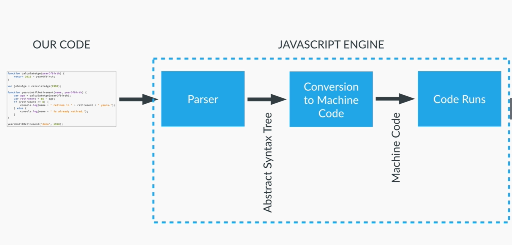
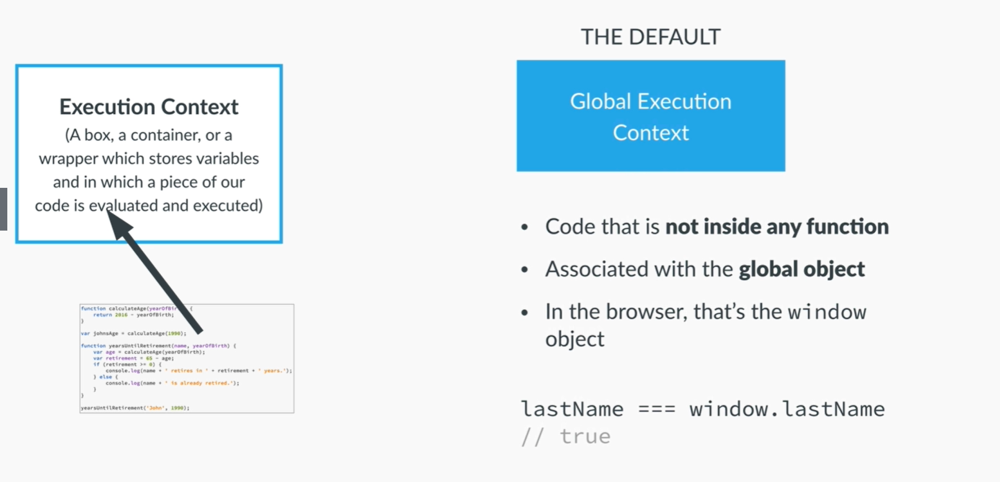
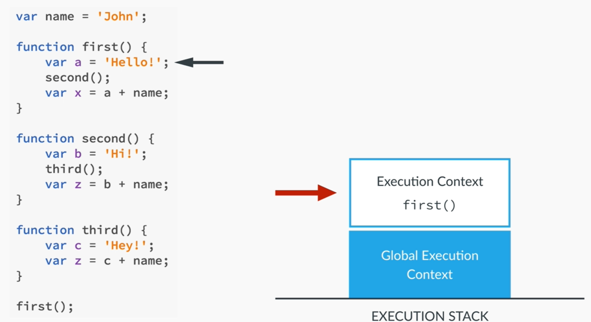
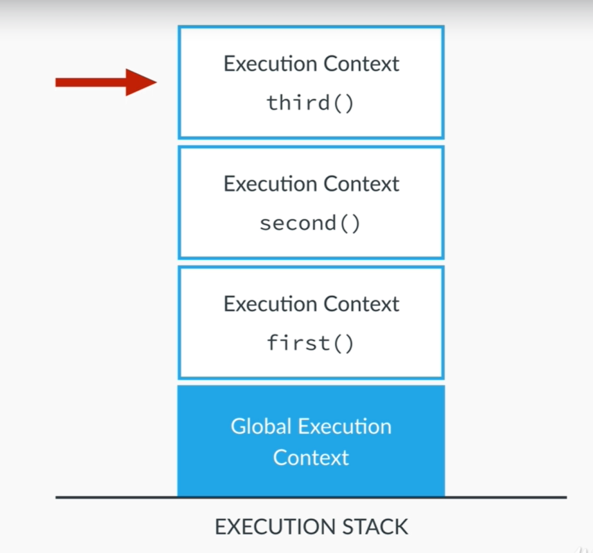
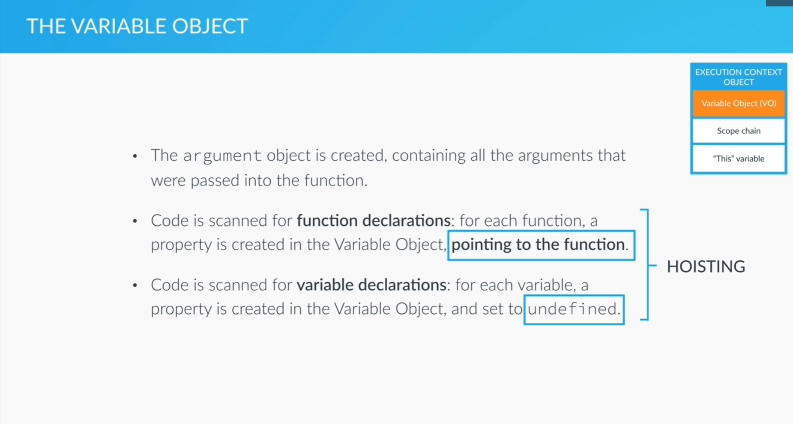

go back |
JavaScript is always hosted in somekind of environment, usually a browser like chrome, firefox, safari, etc.
There are also environments like Node.JS web servers than can run JavaScript.
Taking a look at the browser, within the browser is a JavaScript engine: a program that executes JS code. There are different many engines used in different browsers.
The code is inserted into a parser, which validates the code and if accepted converts it into the abstract syntax tree, where the code is converted into machine code. This machine code is what the system is able to run.

All JS code must be ran in an environment, called an execution context. Imagined like a box, the execution contexts store variables from which code is evaluated and executed.
The default is the Global Execution Context. All code outside of a function is executed. It is for variables and functions outside of a function. They can also be seen as objects, as the GEC is automatically attached to the window object of the browser.
A variable lastName in the global context will by default be attached to the window object as
lastName === window.lastName //true.

It's simple: each new called function receives its own Execution Context. The new context is placed ontop of the GEC, creating an Execution Stack.


Each newly called function is placed on top of the Execution Stack. Once a function has done all its work and returns any variables, the function returns and is removed from the top of the stack, making the next topmost function the active function.
Within the GEC is the Execution Context Object, which has three properties:
When a new function is called its placed on top of the execution stack, done in two phases:
Within the VO, functions and variables are scanned and made available. This is called hoisting.
The different ways functions and variables ared hoisted, is that variables are set to undefined, while functions will be defined.

The function `calculateAge()` can be placed and called after the function declaration.
function calculateAge(year) {
console.log(2020 - year);
}
calculateAge(1990);
However, the function can also be called before the function declaration, as shown below.
calculateAge(1990);
function calculateAge(year) {
console.log(2020 - year);
}
They will both run the same way, because all functions are already made available in a previous stage.
What happens if we apply the same code layout to a function expression like var retirement =
function(year)?
The below code works as expected and returns the correct value to the console log.
var retirement = function (year) {
console.log(65 - (2020 - year));
}
retirement(1990);
However, when calling the function before the function expression is declared the console will log an error.
retirement(1990);
var retirement = function (year) {
console.log(65 - (2020 - year));
}
returns: Uncaught TypeError: retirement is not a function at script.js:11
When trying to use a variable before declaring it:
console.log(age);
var age = 23;
returns: undefined
This happens because all variables are scanned and set to undefined on the first pass-thru.
Calling an undeclared value will return an error.
var age = 23;
function foo() {
var age = 65;
console.log(age);
}
foo();
console.log(age);
The order in which the values are returned is:
This because the variables within the GEC and the variables within the function are different variables. Each gets their own Variable Object.
Functions can be declared and called at any point in the code.